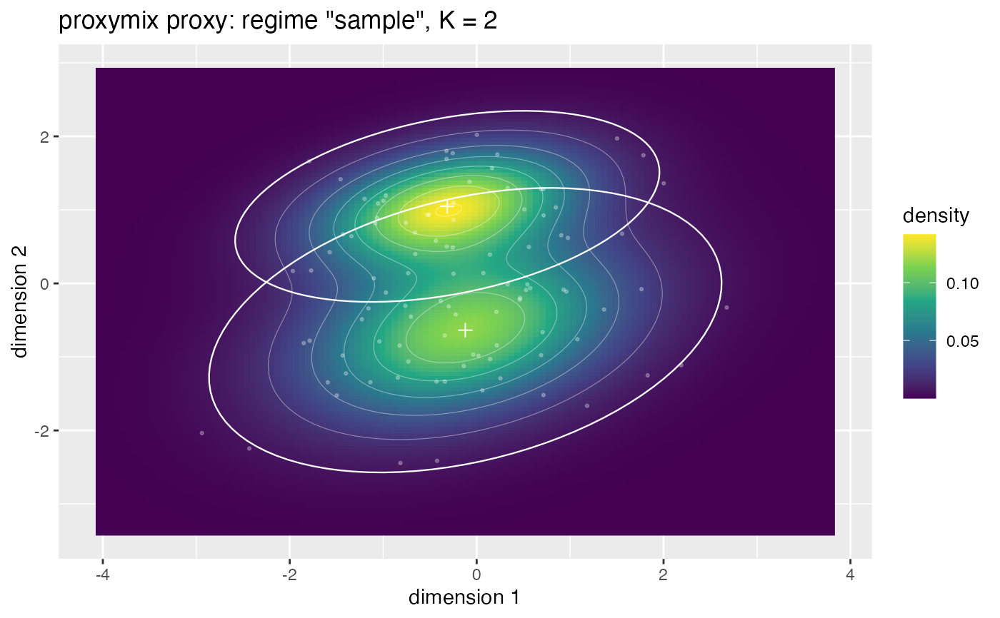
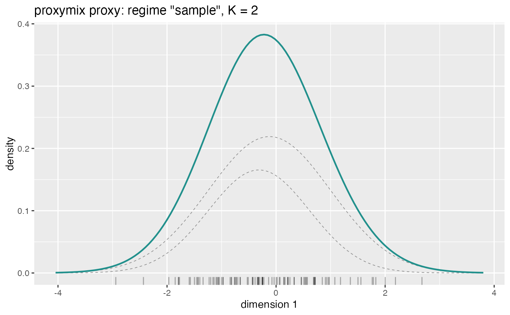

An autoplot() method for gmm_fit objects, rendering the fitted mixture
with ggplot2. The displayed coordinates are reduced to the requested one
or two dimensions through the closed-form marginal gmm_marginalise(), so
the method works for a proxy of any ambient dimension p.
A one-dimensional request draws the marginal mixture density, optionally with the per-component densities underneath and a rug of the target's samples. A two-dimensional request draws the marginal density as a viridis raster with white contour lines, optionally overlaying each component's mean and a probability-contour ellipse.
Arguments
- object
A gmm_fit, typically from
fit_proxymix().- dims
Integer vector of length one or two giving the coordinate(s) to display, in
1:p. Defaults to the first two coordinates (or the only coordinate whenp == 1).- n_grid
Integer scalar — the number of grid points per axis at which the density is evaluated. A two-dimensional plot evaluates
n_grid^2points.- n_sd
Numeric scalar — how many component standard deviations beyond the extreme component means the plotting window extends.
- level
Numeric scalar in
(0, 1)— the probability level of the per-component ellipse drawn on a two-dimensional plot.- show_components
Logical scalar — whether to overlay the per-component densities (one dimension) or mean-and-ellipse glyphs (two dimensions).
- show_data
Logical scalar — whether to overlay the target's samples, when the fitted target carries any.
- ...
Currently ignored, present for generic compatibility.
Details
The method is registered against the ggplot2::autoplot() generic only
when ggplot2 is installed; call it as ggplot2::autoplot(fit) or load
ggplot2 first. It returns the ggplot object, so the usual + layering
applies for further customisation.
See also
Other classes:
glance.gmm_fit,
gmm(),
gmm_counterfactual_law(),
gmm_dim(),
gmm_fit(),
gmm_n_components(),
gmm_target(),
gmm_weights(),
is_proposal(),
tidy.gmm
Examples
samples <- matrix(stats::rnorm(200), ncol = 2)
tgt <- gmm_target_from_samples(samples)
fit <- fit_proxymix(tgt, N = 2L, regime = "sample", max_iter = 25L)
ggplot2::autoplot(fit)

ggplot2::autoplot(fit, dims = 1L)
